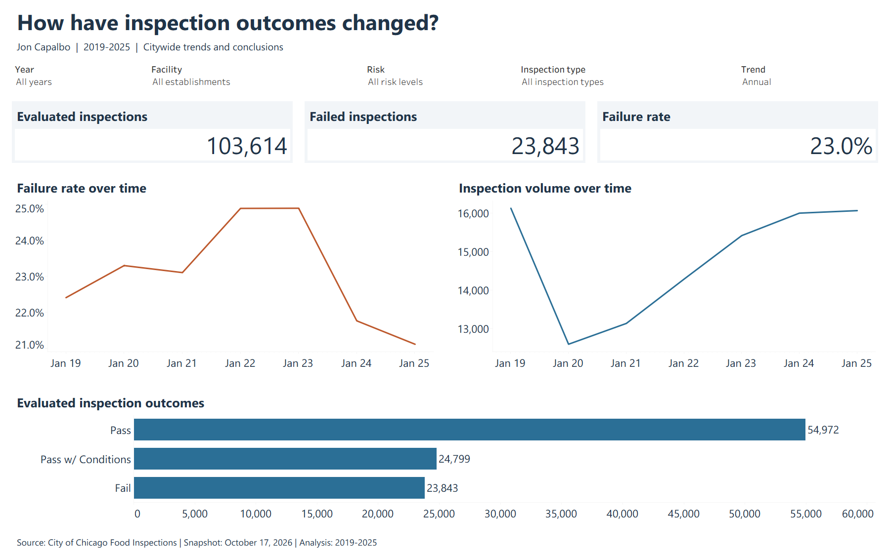
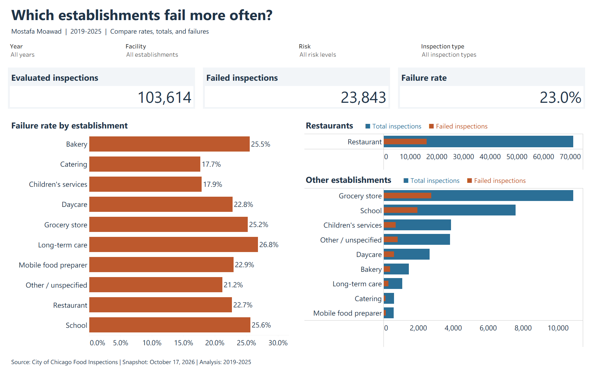
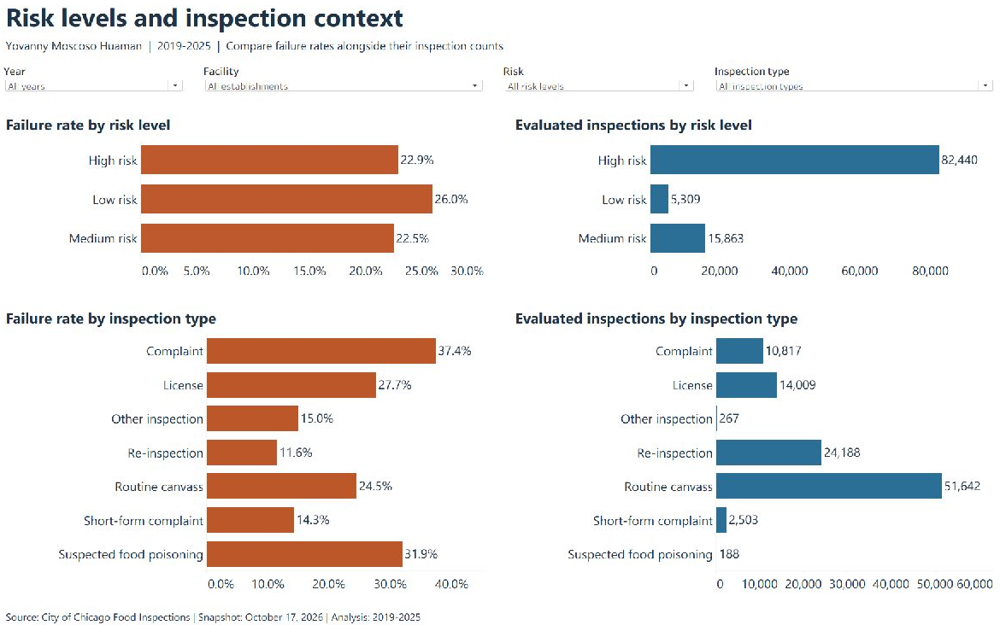

Main finding
The annual failure rate fell from 24.9% to 21.1% between 2023 and 2025.
That’s a drop of about 3.8 percentage points among evaluated inspections. Both the number of visits and the mix of facilities inspected can change from year to year.
Across all seven years, 23,843 of 103,614 evaluated inspections failed, giving an overall failure rate of 23.0%.
Evaluated inspections have a Pass, Pass w/ Conditions or Fail result. These counts describe inspection visits, including repeat visits to the same establishment.
Workbook data, 2019–2025
Annual inspection failure rates
Each bar uses the same 0–30% scale. The table gives the number of evaluated visits and failures behind each rate.
The bars show the full seven-year series. Use Tableau Public or the downloadable workbook to filter it.
| Year | Evaluated | Failed | Failure rate |
|---|---|---|---|
| 2019 | 16,121 | 3,612 | 22.4% |
| 2020 | 12,600 | 2,935 | 23.3% |
| 2021 | 13,139 | 3,035 | 23.1% |
| 2022 | 14,286 | 3,554 | 24.9% |
| 2023 | 15,413 | 3,835 | 24.9% |
| 2024 | 15,995 | 3,481 | 21.8% |
| 2025 | 16,060 | 3,391 | 21.1% |
| Total | 103,614 | 23,843 | 23.0% |
Dashboard previews
Four views of inspection results
These images show the dashboards with all filters reset. Open a full-size preview to read the labels. You can change the year, facility, risk level or inspection type in Tableau Public.

Trends and conclusions · Full-size preview

Establishments · Full-size preview

Risk and inspection type · Full-size preview
Inspection context
Failure rates varied by reason for inspection
Complaint inspections had a 37.4% failure rate, compared with 24.5% for routine canvass inspections and 11.6% for re-inspections.
A reported concern triggers a complaint inspection. That difference in how visits begin makes the rates hard to compare directly.
| Context | Evaluated | Failed | Failure rate |
|---|---|---|---|
| Complaint | 10,817 | 4,048 | 37.4% |
| Routine canvass | 51,642 | 12,659 | 24.5% |
| Re-inspection | 24,188 | 2,797 | 11.6% |
Explore the dashboards
Compare routine inspections by facility and ZIP code
Select Routine canvass under Inspection type. Compare the failure rates for two facility groups, then check how many evaluated inspections each rate represents. Facilities can still differ in other ways.
In Geography, select a ZIP to inspect its local totals and trends. Clear the selection to restore the broader geography view. The citywide Trends and conclusions dashboard remains independent of that map selection.
- Shared controls
- Year, facility, risk and inspection type filter the dashboards. Each rate uses the failures and evaluated visits in the filtered records. You can also switch between annual and monthly results in the geography and trends views.
With all filters reset for 2019-2025, ZIP 60614 had 893 failures in 3,730 evaluated inspections (23.9%), compared with 542 in 2,793 (19.4%) for ZIP 60640. Facility mix and inspection context may differ, so these figures are starting points for investigation.
Open the four dashboards on Tableau Public and use the tabs to switch views. The fixed-width Tableau canvases work best on a desktop; the previews and findings here reflow for smaller screens.
Source and preparation
How I calculated the failure rate
City of Chicago Food Inspections is the public source. The October 17, 2026 snapshot contains 317,175 rows. I kept the 123,673 inspections from the seven complete calendar years 2019 through 2025.
- Failure-rate calculation
- I divided the number of failures by the number of visits with a Pass, Pass w/ Conditions or Fail result. When a filter changes, Tableau repeats that calculation on the selected visits.
- Excluded outcomes
- The workbook keeps 9,392 Out of Business, 7,904 No Entry, 2,735 Not Ready and 28 Business Not Located records. None had an evaluated outcome, so they contribute to neither the numerator nor the denominator.
- Category preparation
- I standardized capitalization and spacing for common facility types, grouped daycare variants together and labeled the remaining types Other / unspecified. I also grouped re-inspection variants. The workbook keeps the original category fields.
- Validation
- I matched the CSV’s inspection IDs and retained fields to the source snapshot. Each Inspection ID appeared once during the seven years. I also checked that the yearly, risk and inspection-context totals matched the overall counts.
Interpretation limits
What an inspection rate can tell you
- A facility can appear several times. The rate tells you how often evaluated visits ended in failure. It cannot tell you the odds that a randomly chosen establishment will fail.
- Complaints, licensing rules and re-inspection schedules affect which establishments get inspected and how often. A year-to-year change can reflect a different mix of facilities.
- Of the evaluated inspections, 381 lacked coordinates. I placed each ZIP at its average recorded location across all seven years, so a visit with a usable ZIP could still count there. In all, 79 evaluated visits could not be mapped. They still count in the citywide totals.
- Each circle summarizes a ZIP code. It does not mark an individual establishment or trace an official ZIP boundary. I kept the city and ZIP labels as recorded, including inconsistencies.
- Only two evaluated inspections had an unspecified risk level. Both passed. They count in the overall totals but do not appear in the risk chart. Risk level is the city’s classification of the facility.
- One failure can move the rate considerably in a small group. Check the visit counts and the scale when comparing views. Filtering can change the time axes and map color range, and the establishment-count panels have separate scales.
To investigate the drop further, I’d compare routine inspections within the same facility type and risk level, then look at which establishments received repeat visits.
Downloads
Tableau workbook and validation totals
Download the workbook to explore it in a compatible Tableau application. The validation file documents the source totals, calculations and workbook checks.
Contact
Contact Jonathan.
I’m looking for permanent, full-time work. I’m based in New Jersey and open to remote roles in the U.S., hybrid work, and relocation.